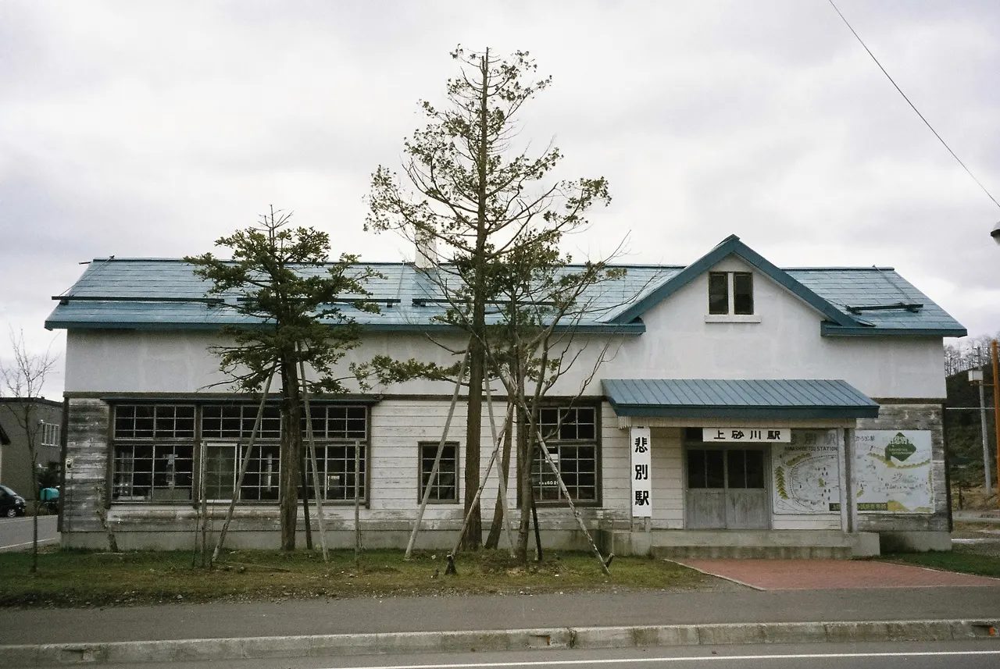
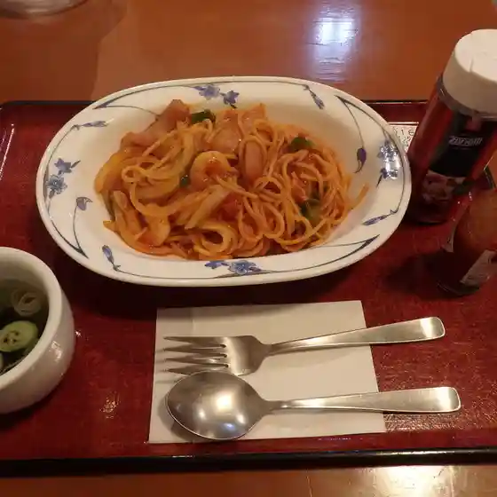
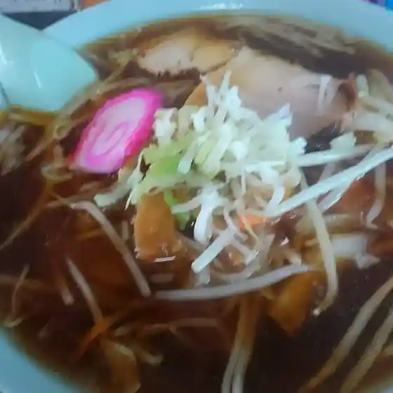
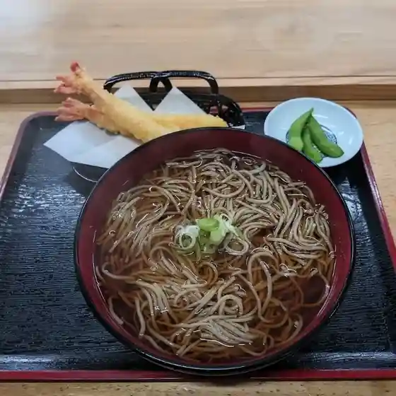
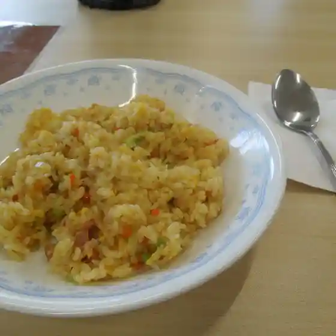
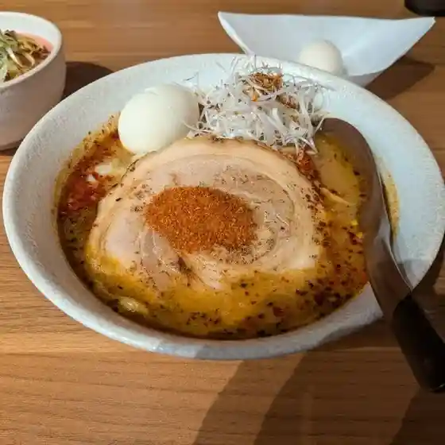
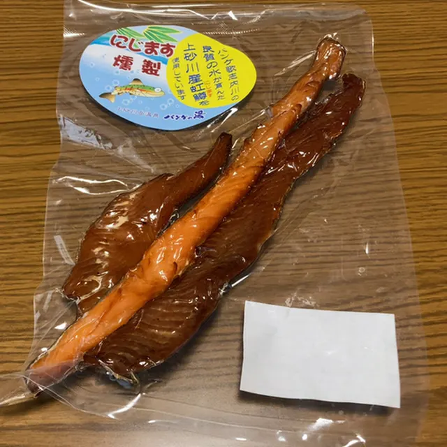
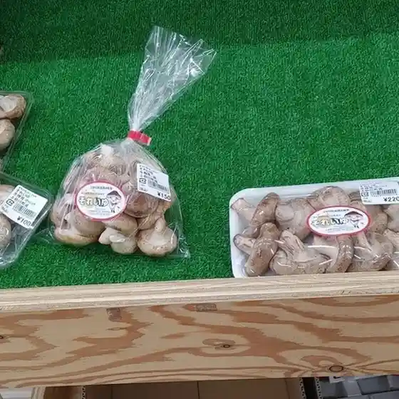

Japan / Hokkaido / Kamisunagawa
Kamisunagawa
Kamisunagawa · Hokkaido
Kamisunagawa
Highlighted on the Hokkaido map.

Stay
上砂川岳温泉 パンケの湯
Kamisunagawadake Onsen Panke no Yu
Onsen lodging in Kamisunagawa, Hokkaido.
Dining
レストラン パンケ

Resutoran Panke
ラーメンだるまや

Raamen Darumaya
勝寿庵

Katsutoshi Iori
まちの駅ふらっと

Machino Eki Furatto
星の砂

Hoshi No Suna
パンケの湯 売店

Panke No Yu Baiten
就労継続支援B型事業所 それいゆ

Shuurou Keizoku Shien B Kata Jigyousho Soreiyu